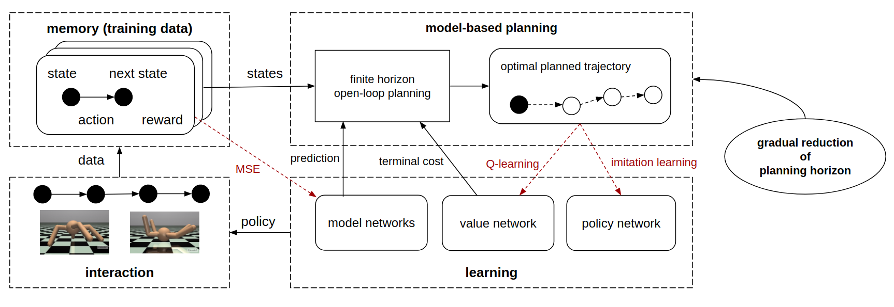
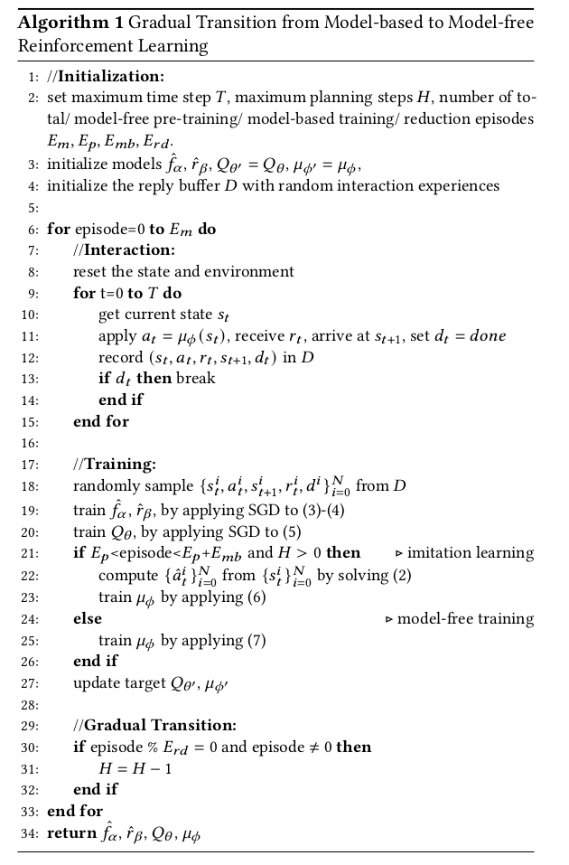
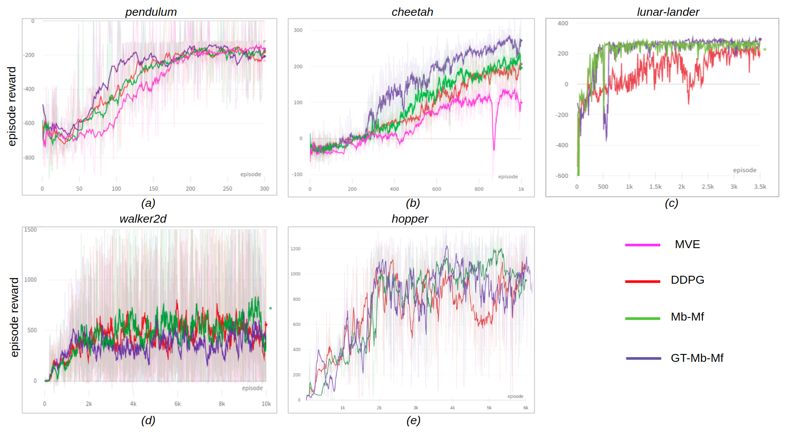

{{ page.title }}

Framework of the second training stage of our method. The interaction data is recorded in a replay buffer, that learn
the dynamics model and reward model. The data pairs are also extended to longer trajectories using model-based prediction
and planning, which can guide policy learning and value learning. The updated policy is again utilized for generating
new interaction data. The planning horizon is gradually reduced during training.
|
Abstract
Model-free reinforcement learning methods could achieve very
good performance but typically requires a substantial amount of
data collection for convergence. On the other hand, model-based
methods tend to be more sample efficient but suffer from the bias of
the learned models. In this work, we aim to combine the advantages
of these approaches. We design a model-based learning framework
that is integrated with value learning. By gradually reducing the
planning horizon, it transforms into pure model-free actor-critic
learning as the training goes. The experiments show that, for
environments with relatively stable dynamics and lower dimensions
for action space, our proposed method reaches high performance
faster compared with baselines. The code is publicly available.
|
|
Algorithm

Experiment Results

|